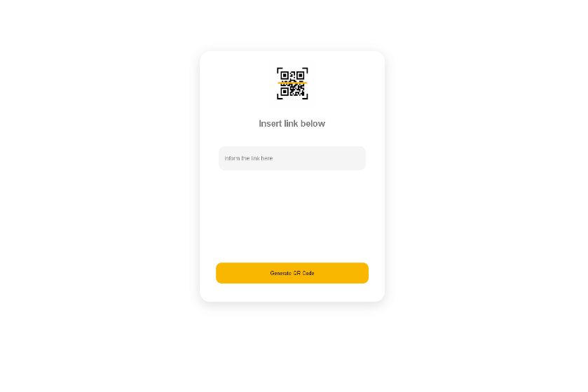
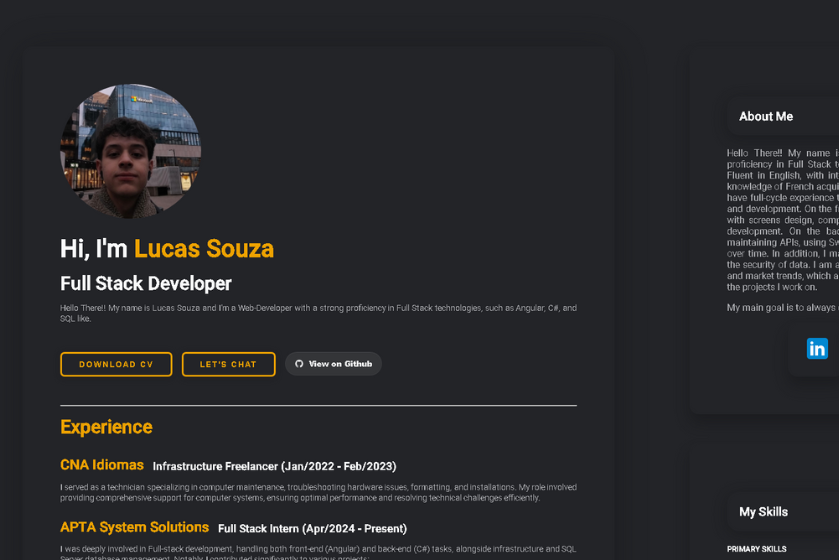
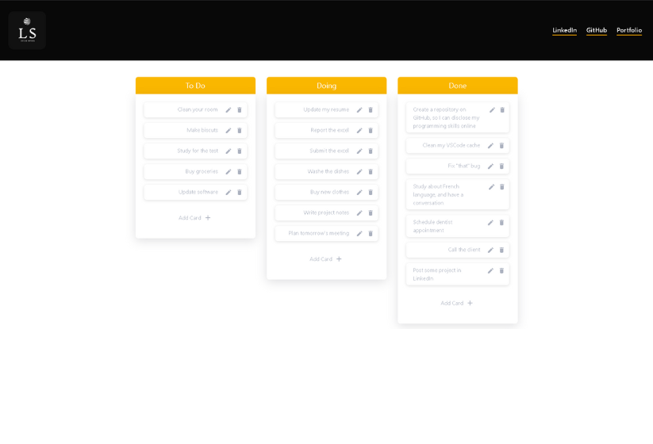
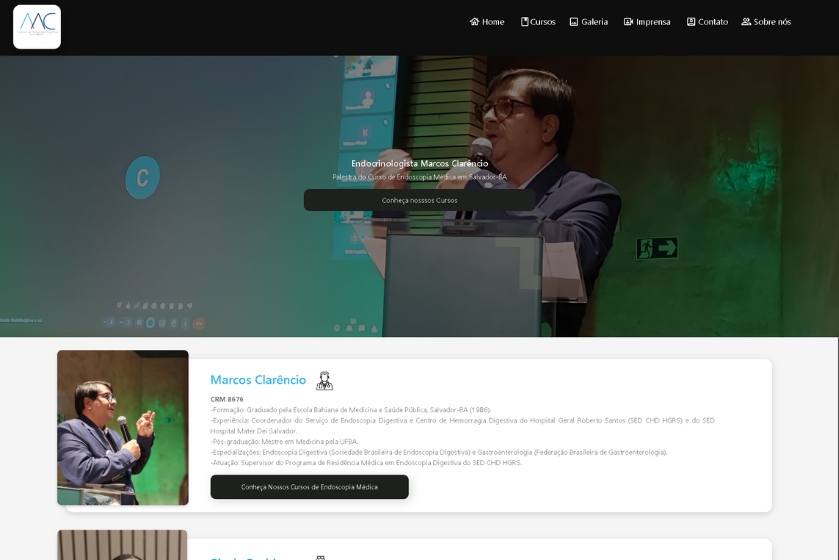
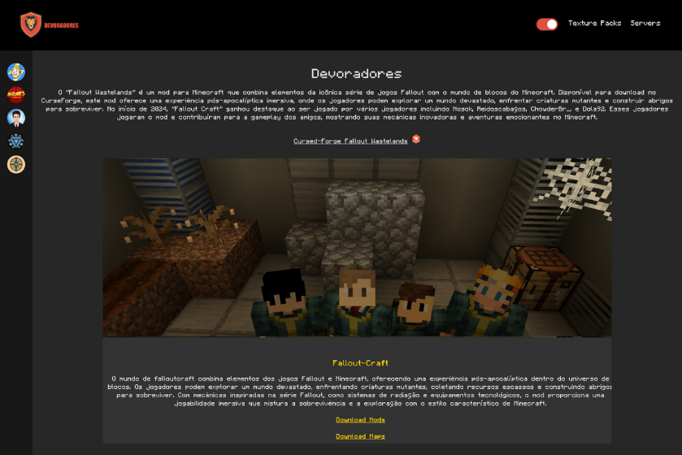
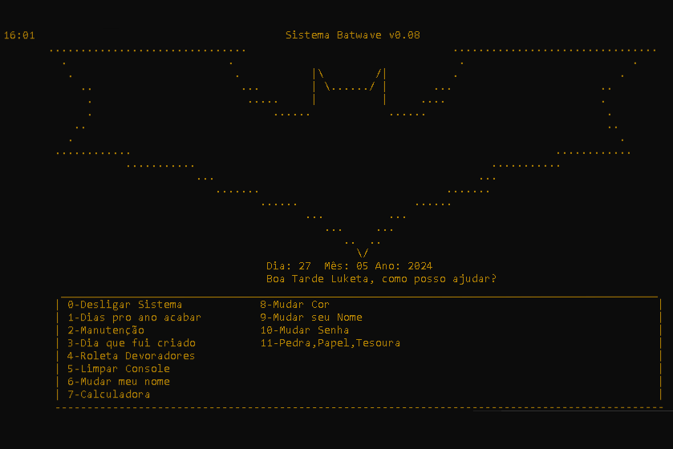
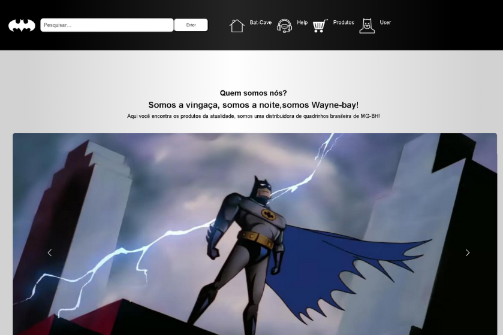
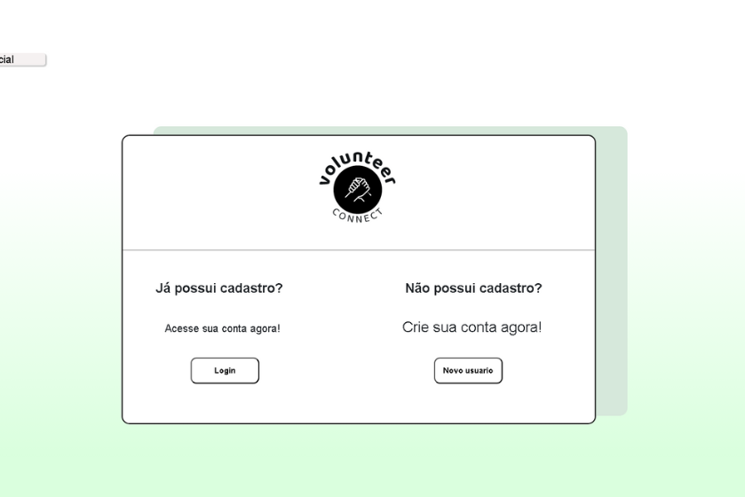

Home
Certificates
Experience
Projects
Let's Chat
Projects

QR-Code Project
QR-Code converter
I developed an application that allows you to convert any link into a QR code simply and quickly. When accessing the page, the user inserts a link and the tool automatically generates a corresponding QR code.
Visit Project

Lucas Souza Resume
Portfolio Resume
This resume was made with Angular 18. Developed dynamic web page, it resumes my professional experience and skills, including Apta Dashboards, a statistical system with complex components, and contributed to the development of Slock 2.0, an energy source blocking system. Created and maintained responsive front-end features using Angular 18, ensuring smooth user interactions and system performance.
Visit Project

Kanban-project
CRUD - Kanban
This Angular project is a dynamic Kanban board application designed to streamline task management. The application features a three-column layout for organizing tasks by their status: 'To Do,' 'Doing,' and 'Done.' Each column serves as a stage in the workflow, allowing users to visualize and track task progress from start to completion. The project includes full CRUD (Create, Read, Update, Delete) functionality for task cards.
Visit Project

Endoscopy Institute Marcos Clarêncio
Endoscopy - Institute
A course website focused on courses in the area of medical endoscopy and nursing. The objective of the system is to promote in-person endoscopy courses and facilitate payment via PagSeguro. In the project, front-end, back-end and MongoDB were used.(Not Finishied yet)
Visit Project

Devoradores Repository
Minecraft Modpacks and Maps
As a developer, I've built a platform where you can discover amazing servers, explore unique modpacks, and download creative maps. Whether you're a builder, explorer, or just looking for a new server to join, we've got everything you need to enhance your Minecraft experience!
Visit Project

Bat-Wave
Bat-computer
The "BatWave" project is inspired by the iconic system used by Batman, incorporating a series of advanced and interactive features, developed in C#. This all-in-one system is designed to be a powerful tool for both everyday use and entertainment, combining security, utility and customization. Functionalities
Visit Project

Wayne-bay
Bat-computer
The "Wayne-bay" was my first front-end project and it was inspired by the iconic Batman, incorporating a series of advanced and interactive features, developed in html,css and javascriprt.
Visit Project

Volunteer-Connect
Volunteer University Project
Here, you can connect with people who want to make a difference. Our site allows you to create an account, post items, edit your profile, update your username and password, and even add a profile picture. I was responsible for the login and register functions within.
Visit Project